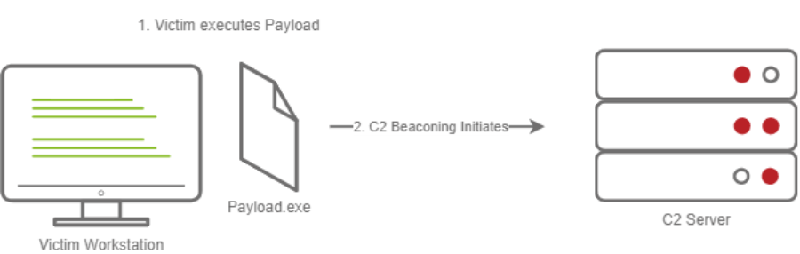
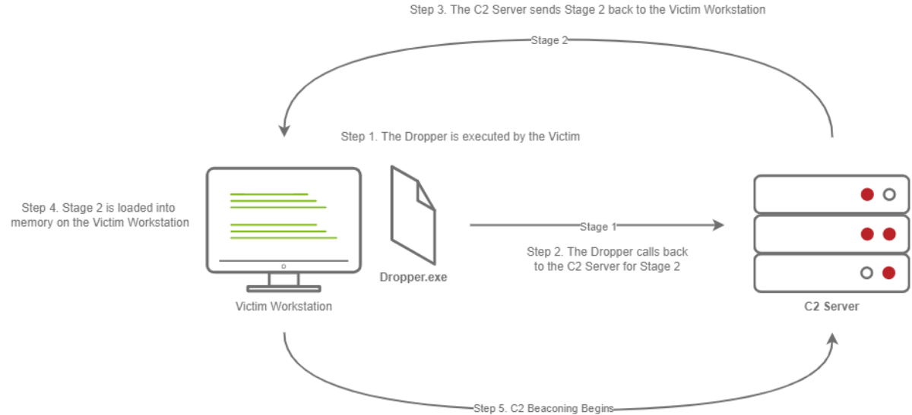

C2 Introduction
Intro to C2
Command and Control (C2) Frameworks are an essential part of both Red Teamers and Advanced Adversaries playbooks. They make it both easy to manage compromised devices during an engagement and often help aid in lateral movement.
Room Objectives
In this room, we will learn about Command and Control Frameworks in-depth to gain a better understanding of the following topics:
• How a Command and Control Framework operates
• The various components that you may use.
• How to set up a basic Command and Control Framework
• Use Armitage or Metasploit to gain familiarity with a Command and Control Framework
• How to administer a Command and Control Framework
• OPSEC Considerations while administering a Command and Control Framework
• And much more!
What is a Command and Control Framework
While trying to digest the various components of a C2 framework, it may be intimidating. However, they don’t have to be. In order to better understand what a C2 framework is at its most basic level, think of a Netcat listener (the C2 server) that is capable of handling many reverse shells calling back at once (C2 Agents). It’s a server but for reverse shells. Unlike Netcat, almost all C2 frameworks require a special payload generator. This is usually a feature that is built into the framework itself. For example, Metasploit is a C2 Framework that has its own payload generator, MSFVenom.
So what exactly makes C2 frameworks better than a normal Netcat listener? It seems like all someone needs to do is implement session management into Netcat, and you have the same thing? While this is true, C2 frameworks shine in their “Post Exploitation” features.
Command and Control Structure
1. C2 Server
In order to understand a Command and Control framework, we must first start by understanding the various components of a C2 server. Let’s start with the most essential component - The C2 Server itself. The C2 Server serves as a hub for agents to call back to. Agents will periodically reach out to the C2 server and wait for the operator’s commands.
2. Agents / Payloads
An agent is a program generated by the C2 framework that calls back to a listener on a C2 server. Most of the time, this agent enables special functionality compared to a standard reverse shell. Most C2 Frameworks implement pseudo commands to make the C2 Operator’s life easier. Some examples of this may be a pseudo command to Download or Upload a file onto the system. It’s important to know that agents can be highly configurable, with adjustments on the timing of how often C2 Agents beacon out to a Listener on a C2 Server and much more.
3. Listeners
On the most basic level, a listener is an application running on the C2 server that waits for a callback over a specific port or protocol. Some examples of this are DNS, HTTP, and or HTTPS.
4. Beacons
A Beacon is the process of a C2 Agent calling back to the listener running on a C2 Server.
Obfuscating Agent Callbacks
Sleep Timers
One key thing that some security analysts, anti-virus, and next-generation firewalls look for when attempting to identify Command and Control traffic is beaconing and the rate at which a device beacons out to a C2 server. Let’s say a firewall observed traffic that looks like so
• TCP/443 - Session Duration 3s, 55 packets sent, 10:00:05.000
• TCP/443 - Session Duration 2s, 33 packets sent, 10:00:10.000
• TCP/443 - Session Duration 3s, 55 packets sent, 10:00:15.000
• TCP/443 - Session Duration 1s, 33 packets sent, 10:00:20.000
• TCP/443 - Session Duration 3s, 55 packets sent, 10:00:25.000
A pattern is starting to form. The agent beacons out every 5 seconds; this means that it has a sleep timer of 5 seconds.
Jitter
Jitter takes the sleep timer and adds some variation to it; our C2 beaconing may now exhibit a strange pattern that may show activity that is closer to an average user:
• TCP/443 - Session Duration 3s, 55 packets sent, 10:00:03.580
• TCP/443 - Session Duration 2s, 33 packets sent, 10:00:13.213
• TCP/443 - Session Duration 3s, 55 packets sent, 10:00:14.912
• TCP/443 - Session Duration 1s, 33 packets sent, 10:00:23.444
• TCP/443 - Session Duration 3s, 55 packets sent, 10:00:27.182
The beaconing is now set at a semi-irregular pattern that makes it slightly more difficult to identify among regular user traffic. In more advanced C2 frameworks, it may be possible to alter various other parameters, like “File” jitter or adding junk data to the payload or files being transmitted to make it seem larger than it actually is.
Sample Python3 code for Jitter may look like so:
################################
import random
sleep = 60
jitter = random.randint(-30,30)
sleep = sleep + jitter
################################
It's important to note that this is a fundamental example, but it can be much more math-heavy, setting upper bounds and lower bounds, taking percentages of last sleep, and building on from there. Because this is an introduction room, we will spare you a complicated formula.
Payload Types
Much like a regular Reverse Shell, there are two primary types of payloads that you may be able to use in your C2 Framework; Staged and Stageless payloads.
Stageless Payloads
Stageless Payloads are the simplest of the two; they contain the full C2 agent and will call back to the C2 server and begin beaconing immediately. You can refer to the diagram below to gain a better understanding of how Stageless payloads operate.

The steps for establishing C2 beaconing with a Stageless payload are as follows:
1. The Victim downloads and executes the Dropper
2. The beaconing to the C2 Server begins
Staged Payloads
Staged payloads require a callback to the C2 server to download additional parts of the C2 agent. This is commonly referred to as a “Dropper” because it is “Dropped” onto the victim machine to download the second stage of our staged payload. This is a preferred method over stageless payloads because a small amount of code needs to be written to retrieve the additional parts of the C2 agent from the C2 server. It also makes it easier to obfuscate code to bypass Anti-Virus programs.

The steps for establishing C2 beaconing with a Staged payload are as follows:
1. The Victim downloads and executes the Dropper
2. The Dropper calls back to the C2 Server for Stage 2
3. The C2 Server sends Stage 2 back to the Victim Workstation
4. Stage 2 is loaded into memory on the Victim Workstation
5. C2 Beaconing Initializes, and the Red Teamer/Threat Actors can engage with the Victim on the C2 Server.
Payload Formats
As you may know, Windows PE files (Executables) are not the only way to execute code on a system. Some C2 Frameworks support payloads in various other formats, for example:
• PowerShell Scripts
Which may contain C# Code and may be compiled and executed with the Add-Type commandlet
• HTA Files
• JScript Files
• Visual Basic Application/Scripts
• Microsoft Office Documents
and many more. For more information on various other payload formats, you should review the Weaponization room in the Initial Access module.
Link: https://tryhackme.com/room/weaponization
Modules
Modules are a core component of any C2 Framework; they add the ability to make agents and the C2 server more flexible. Depending on the C2 Framework, scripts must be written in different languages. Cobalt Strike has “Aggressor Scripts”, which are written in the “Aggressor Scripting Language”. PowerShell Empire has support for multiple languages, Metasploit’s Modules are written in Ruby, and many others are written in many other languages.
A) Post Exploitation Modules
Post Exploitation modules are simply modules that deal with anything after the initial point of compromise, this could be as simple as running SharpHound.ps1 to find paths of lateral movement, or it could be as complex as dumping LSASS and parsing credentials in memory. For more information on Post Exploitation, refer to the Post Exploitation Basics room.
Link: https://tryhackme.com/room/postexploit
B) Pivoting Modules
One of the last major components of a C2 Framework is its pivoting modules, making it easier to access restricted network segments within the C2 Framework. If you have Administrative Access on a system, you may be able to open up an “SMB Beacon”, which can enable a machine to act as a proxy via the SMB protocol. This may allow machines in a restricted network segment to communicate with your C2 server.
The diagram above shows how hosts within a restricted network segment call back to the C2 Server:
1. The Victims call back to an SMB named pipe on another Victim in a non-restricted network segment.
2. The Victim in the non-restricted network segment calls back to the C2 Server over a standard beacon.
3. The C2 Server then sends commands back to the Victim in the non-restricted network segment.
4. The Victim in the non-restricted network segment then forwards the C2 instructions to the hosts in the restricted segment.
Facing the world
One important obstacle that all Red Teamers must overcome is placing infrastructure in plain view. There are many different methods to do this; one of the most popular methods is called "Domain Fronting".
A) Domain Fronting
Domain Fronting utilizes a known, good host (for example) Cloudflare. Cloudflare runs a business that provides enhanced metrics on HTTP connection details as well as caching HTTP connection requests to save bandwidth. Red Teamers can abuse this to make it appear that a workstation or server is communicating with a known, trusted IP Address. Geolocation results will show wherever the nearest Cloudflare server is, and the IP Address will show as ownership to Cloudflare.
The diagram above depicts how Domain Fronting works:
1. The C2 Operator has a domain that proxies all requests through Cloudflare.
2. The Victim beacons out to the C2 Domain.
3. Cloudflare proxies the request, then looks at the Host header and relays the traffic to the correct server.
4. The C2 Server then responds to Cloudflare with the C2 Commands.
5. The Victim then receives the command from Cloudflare.
B) C2 Profiles
The next technique goes by several names by several different products, "NGINX Reverse Proxy", "Apache Mod_Proxy/Mod_Rewrite", "Malleable HTTP C2 Profiles", and many others. However, they are all more or less the same. All of the Proxy features more or less allow a user to control specific elements of the incoming HTTP request. Let's say an incoming connection request has an "X-C2-Server" header; we could explicitly extract this header using the specific technology that is at your disposal (Reverse Proxy, Mod_Proxy/Rewrite, Malleable C2 Profile, etc.) and ensure that your C2 server responds with C2 based responses. Whereas if a normal user queried the HTTP Server, they might see a generic webpage. This is all dependent on your configuration.

The diagram above depicts how C2 profiles work:
1. The Victim beacons out to the C2 Server with a custom header in the HTTP request, while a SOC Analyst has a normal HTTP Request
2. The requests are proxied through Cloudflare
3. The C2 Server receives the request and looks for the custom header, and then evaluates how to respond based on the C2 Profile.
4. The C2 Server responds to the client and responds to the Analyst/Compromised device.
Because HTTPS requests are encrypted, extracting specific headers (ex: X-C2-Server, or Host) may be impossible. By using C2 Profiles, we may be able to hide our C2 server from the prying eyes of a Security Analyst. For more information on how C2 profiles can be powerful, see this blog post on Understanding Malleable C2 Profiles for Cobalt Strike.
In task 7, we will explain and explore another technique called "Redirectors". We will gain hands-on experience configuring Metasploit and Apache 2 to demonstrate how a redirector is set up.